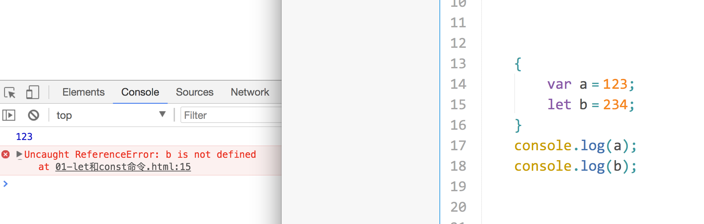
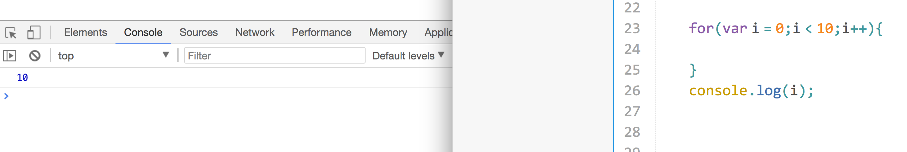
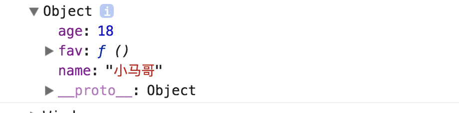
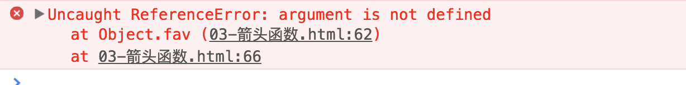

1997年 ECMAScript 1.0 诞生
1999年12月 ECMAScript 3.0诞生，它 是一个巨大的成功，在业界得到了广泛的支持，它奠定了JS的基本语法，被其后版本完全继承。直到今天，我们一开始学习JS，其实就是在学3.0版的语法
2000年的ECMAScript4.0是当下ES6的前身，但由于这个版本太过激烈，对ES3做了彻底升级，所以暂时被“和谐”了
2009年12月，ECMAScript5.0版正式发布。ECMA专家组预计ECMAScript的第五个版本会在2013年中期到2018年作为主流的开发标准。2011年6月，ES5.1版发布，并且成为ISO国际标准
2013年，ES6草案冻结，不再添加新的功能，新的功能将被放到ES7中；2015年6月，ES6正式通过，成为国际标准
好的，介绍es6的诞生，我们简单来学几个es6的语法，仅仅的只是为了后面咱们vue的课程做课前准备。如果感兴趣的同学可以查看
es6新增了let命令，用来声明变量。它的用法类似于var，但是所声明的变量，只在let命令所在的代码块内有效。

上面代码在代码块之中，分别用let和var声明了两个变量。然后在代码块之外调用这两个变量，结果let声明的变量报错，var声明的变量返回了正确的值。这表明，let声明的变量只在它所在的代码块有效
for循环相信大家都玩过。下面这种现象扭曲了我们块级作用域的思想！如果将var改成let就可以了！

再看一个例子：
var a = [];
for (var i = 0; i < 10; i++) {
a[i] = function () {
console.log(i);
};
}
a[6]();上面代码中，变量i是var命令声明的，在全局范围内都有效，所以全局只有一个变量i。每一次循环，变量i的值都会发生改变，而循环内被赋给数组a的函数内部的console.log(i)，里面的i指向的就是全局的i。也就是说，所有数组a的成员里面的i，指向的都是同一个i，导致运行时输出的是最后一轮的i的值，也就是 10
如果使用let，声明的变量仅在块级作用域内有效，最后输出的是 6
var a = [];
for (let i = 0; i < 10; i++) {
a[i] = function () {
console.log(i);
};
}
a[6]();上面代码中，变量i是let声明的，当前的i只在本轮循环有效，所以每一次循环的i其实都是一个新的变量，所以最后输出的是6。你可能会问，如果每一轮循环的变量i都是重新声明的，那它怎么知道上一轮循环的值，从而计算出本轮循环的值？这是因为 JavaScript 引擎内部会记住上一轮循环的值，初始化本轮的变量i时，就在上一轮循环的基础上进行计算
var命令会发生”变量提升“现象，即变量可以在声明之前使用，值为undefined。这种现象多多少少是有些奇怪的，按照一般的逻辑，变量应该在声明语句之后才可以使用。
为了纠正这种现象，let命令改变了语法行为，它所声明的变量一定要在声明后使用，否则报错。
// var 的情况
console.log(foo); // 输出undefined
var foo = 2;
// let 的情况
console.log(bar); // 报错ReferenceError
let bar = 2;上面代码中，变量foo用var命令声明，会发生变量提升，即脚本开始运行时，变量foo已经存在了，但是没有值，所以会输出undefined。变量bar用let命令声明，不会发生变量提升。这表示在声明它之前，变量bar是不存在的，这时如果用到它，就会抛出一个错误。
let不允许在相同作用域内，重复声明同一个变量。
// 报错
function func() {
let a = 10;
var a = 1;
}
// 报错
function func() {
let a = 10;
let a = 1;
}因此，不能在函数内部重新声明参数
function func(arg) {
let arg; // 报错
}
function func(arg) {
{
var arg; // 不报错
}
}ES5 只有全局作用域和函数作用域，没有块级作用域，这带来很多不合理的场景。
第一种场景，内层变量可能会覆盖外层变量。
var tmp = new Date();
function f() {
console.log(tmp);
if (false) {
var tmp = 'hello world';
}
}
f(); // undefined上面代码的原意是，if代码块的外部使用外层的tmp变量，内部使用内层的tmp变量。但是，函数f执行后，输出结果为undefined，原因在于变量提升，导致内层的tmp变量覆盖了外层的tmp变量。
第二种场景，用来计数的循环变量泄露为全局变量。
var s = 'hello';
for (var i = 0; i < s.length; i++) {
console.log(s[i]);
}
console.log(i); // 5上面代码中，变量i只用来控制循环，但是循环结束后，它并没有消失，泄露成了全局变量。
const命令
基本语法
const声明一个只读的常量。一旦声明，常量的值就不能改变。
const PI = 3.1415;
PI // 3.1415
PI = 3;
// TypeError: Assignment to constant variable.上面代码表明改变常量的值会报错
const声明的变量不得改变值，这意味着，const一旦声明变量，就必须立即初始化，不能留到以后赋值
const foo;
// SyntaxError: Missing initializer in const declaration上面代码表示，对于const来说，只声明不赋值，就会报错
const的作用域与let`命令相同：只在声明所在的块级作用域内有效。
if (true) {
const MAX = 5;
}
MAX // Uncaught ReferenceError: MAX is not defined传统的JavaScript语言，输出模板通常是这样的写的。
$('#result').append(
'There are <b>' + basket.count + '</b> ' +
'items in your basket, ' +
'<em>' + basket.onSale +
'</em> are on sale!'
);上面这种写法相当繁琐不方便，ES6 引入了模板字符串解决这个问题。
$('#result').append(`
There are <b>${basket.count}</b> items
in your basket, <em>${basket.onSale}</em>
are on sale!
`);模板字符串（template string）是增强版的字符串，用反引号（`）标识。它可以当作普通字符串使用，也可以用来定义多行字符串，或者在字符串中嵌入变量
// 普通字符串
`In JavaScript '\n' is a line-feed.`
// 多行字符串
`In JavaScript this is
not legal.`
console.log(`string text line 1
string text line 2`);
// 字符串中嵌入变量
let name = "Bob", time = "today";
`Hello ${name}, how are you ${time}?`上面代码中的模板字符串，都是用反引号表示。如果在模板字符串中需要使用反引号，则前面要用反斜杠转义。
let greeting = `\`Yo\` World!`;输入结果：Yo World!
如果使用模板字符串表示多行字符串，所有的空格和缩进都会被保留在输出之中。
$('#list').html(`
<ul>
<li>first</li>
<li>second</li>
</ul>
`);基本语法：
ES6允许使用“箭头”（=>）定义函数
var f = a = > a
//等同于
var f = function(a){
return a;
}如果箭头函数不需要参数或需要多个参数，就使用一个圆括号代表参数部分。
//无形参
var f = () => 5;
// 等同于
var f = function () { return 5 };
//多个形参
var sum = (num1, num2) => num1 + num2;
// 等同于
var sum = function(num1, num2) {
return num1 + num2;
};使用箭头函数注意点：
箭头函数有几个使用注意点。
（1）函数体内的this对象，就是定义时所在的对象，而不是使用时所在的对象。
var name = '张三'；
var person = {
name:'小马哥',
age:18,
fav:function(){
console.log(this)
console.log(this.name)
}
}
person.fav();我们发现，打印的结果为

此时this指向的是使用它的对象，也就是person对象
var person2 = {
name:'小马哥',
age:18,
fav: ()=>{
// 当前this指向了定义时所在的对象（window）
console.log(this);
}
}
person2.fav();打印的结果：window
使用箭头函数，它表示定义时所在的对象window。
再看一个例子吧！
function foo() {
setTimeout(() => {
console.log('id:', this.id);
}, 100);
}
var id = 21;
foo.call({ id: 42 });
// id: 42上面代码中，setTimeout的参数是一个箭头函数，这个箭头函数的定义生效是在foo函数生成时，而它的真正执行要等到 100 毫秒后。如果是普通函数，执行时this应该指向全局对象window，这时应该输出21。但是，箭头函数导致this总是指向函数定义生效时所在的对象（本例是{id: 42}），所以输出的是42。
（2）不可以使用arguments对象，该对象在函数体内不存在。如果要用，可以用 rest 参数代替。
var person3 = {
name:'小马哥',
age:18,
fav: ()=>{
console.log(argument);
}
}
person3.fav('把妹','把爷');报出如下❎：

为了解决箭头函数this指向的问题 推出来一种写法 对象的单体模式
var person = {
name:'小马哥',
age:12,
fav(){
console.log(this.name,this.age);
}
}
person.fav();JavaScript 语言中，生成实例对象的传统方法是通过构造函数。
function Animal(name,age){
this.name = name;
this.age = age;
}
Animal.prototype.showName = function(){
console.log(this.name);
console.log(this.age);
}
var a = new Animal('小黄',5);
a.showName();上面这种写法跟传统的面向对象语言（比如 C++ 和 Java）差异很大，很容易让新学习这门语言的程序员感到困惑。
ES6 提供了更接近传统语言的写法，引入了 Class（类）这个概念，作为对象的模板。通过class关键字，可以定义类。
基本上，ES6 的class可以看作只是一个语法糖，它的绝大部分功能，ES5 都可以做到，新的class写法只是让对象原型的写法更加清晰、更像面向对象编程的语法而已。上面的代码用 ES6 的class改写，就是下面这样
class Animal{
// 构造器 当你创建实例之后 constructor()方法会立刻调用 通常这个方法初始化对象的属性
constructor(name,age){
this.name = name;
this.age = age;
}
showName(){
console.log(this.name);
}
}
var a2 = new Animal('点点',3);上面代码定义了一个“类”，可以看到里面有一个constructor方法，这就是构造方法，而this关键字则代表实例对象。也就是说，ES5 的构造函数Animal，对应 ES6 的Animal类的构造方法。
Animal类除了构造方法，还定义了一个showName方法。注意，定义“类”的方法的时候，前面不需要加上function这个关键字，直接把函数定义放进去了就可以了。另外，方法之间不需要逗号分隔，加了会报错。
ES6 的类，完全可以看作构造函数的另一种写法。
console.log(Animal2===Animal2.prototype.constructor);//true上面代码表示，类本身就指向了类的构造函数。
使用的时候，也是直接对类使用new命令，跟构造函数的用法完全一致。
constructor方法是类的默认方法，通过new命令生成对象实例时，自动调用该方法。一个类必须有constructor方法，如果没有显式定义，一个空的constructor方法会被默认添加。
class Animal {
}
// 等同于
class Animal {
constructor() {}
}上面代码中，定义了一个空的类Point，JavaScript 引擎会自动为它添加一个空的constructor方法。
class Animal {
constructor(name, gender) {
this.name = name
this.gender = gender
}
}
# 继承父类在constructor方法中调用执行super()方法
class Cat extends Animal {
constructor() {
super();
}
}